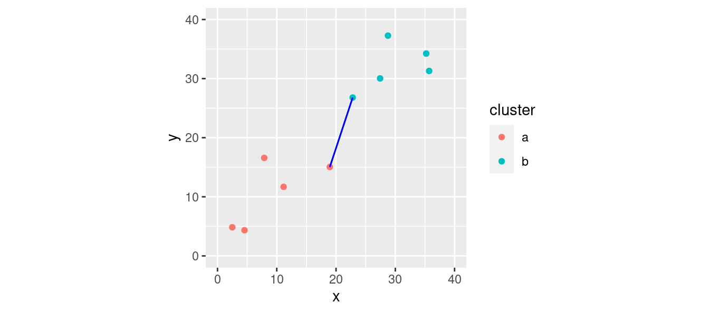
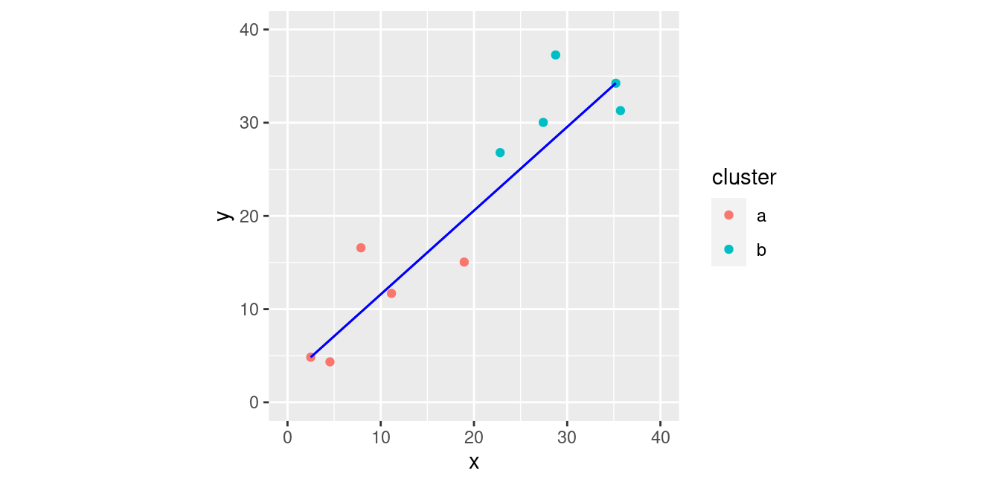
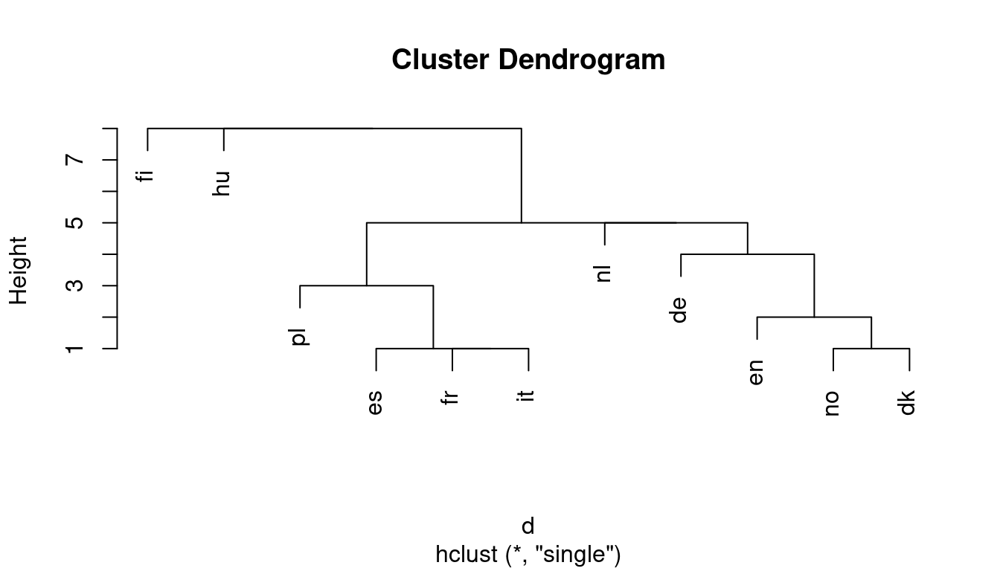
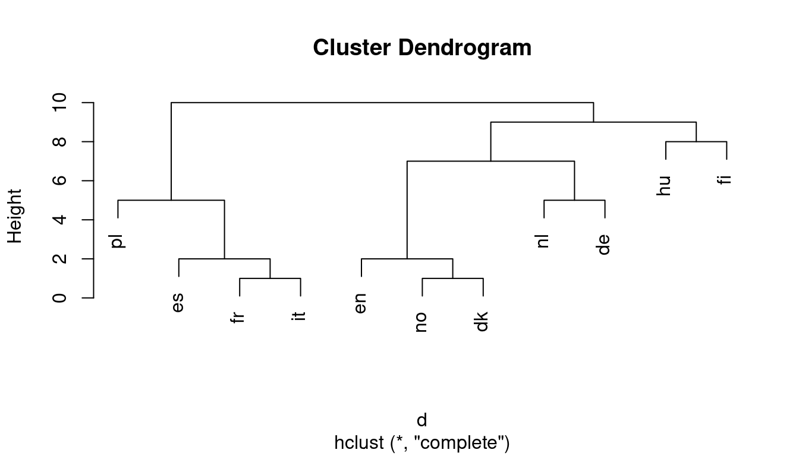
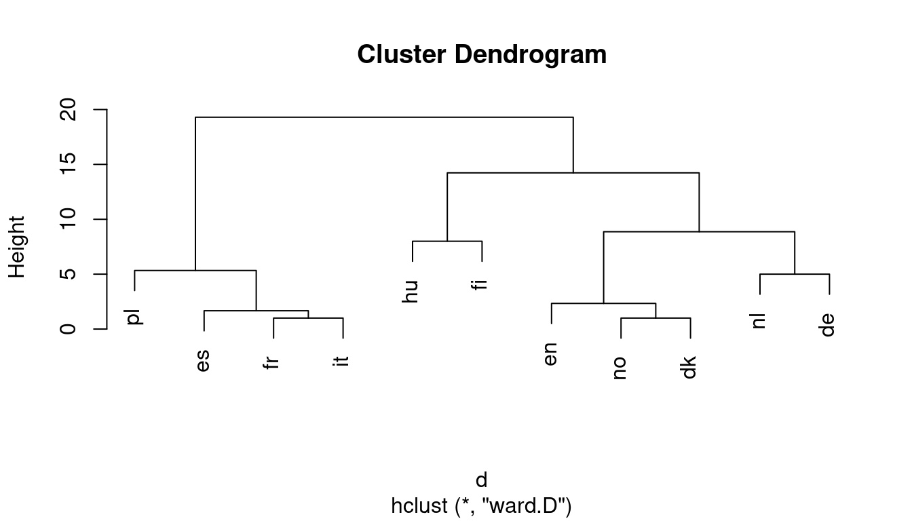
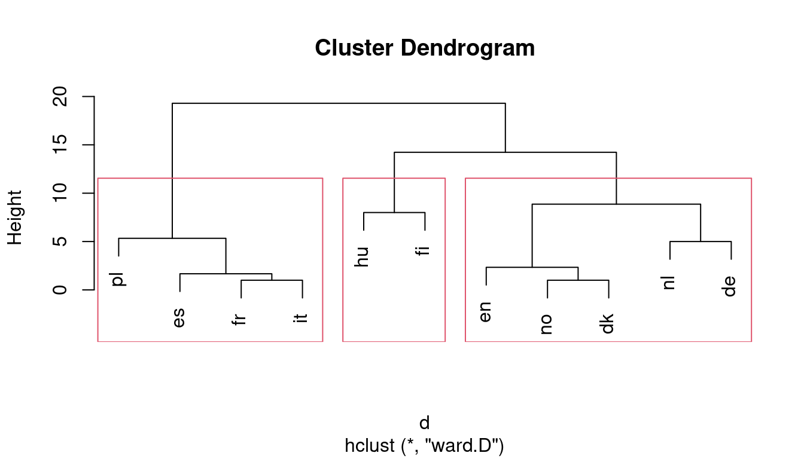
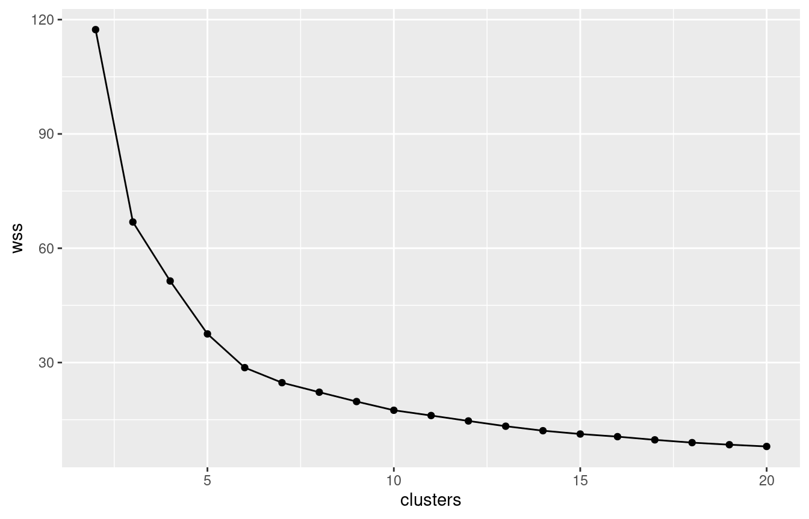
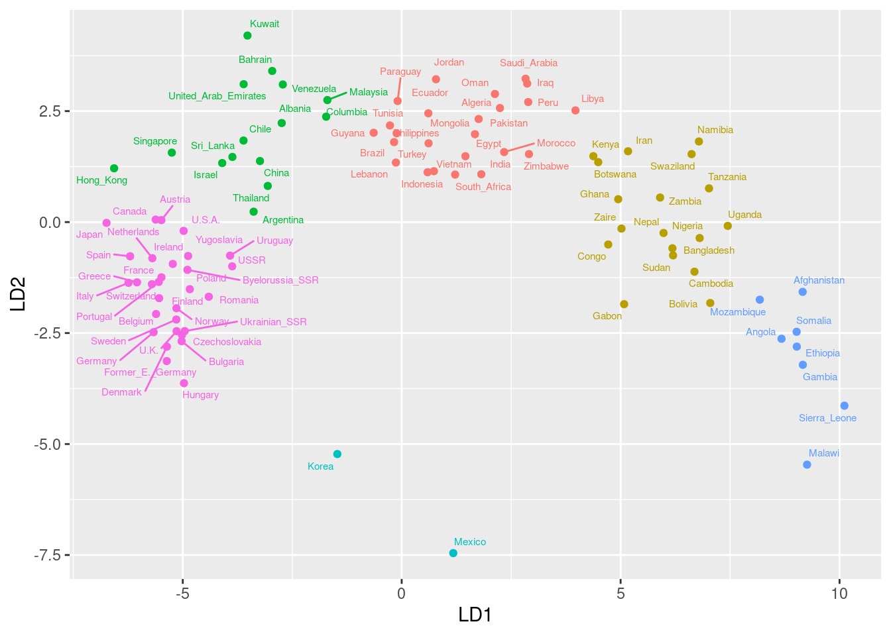
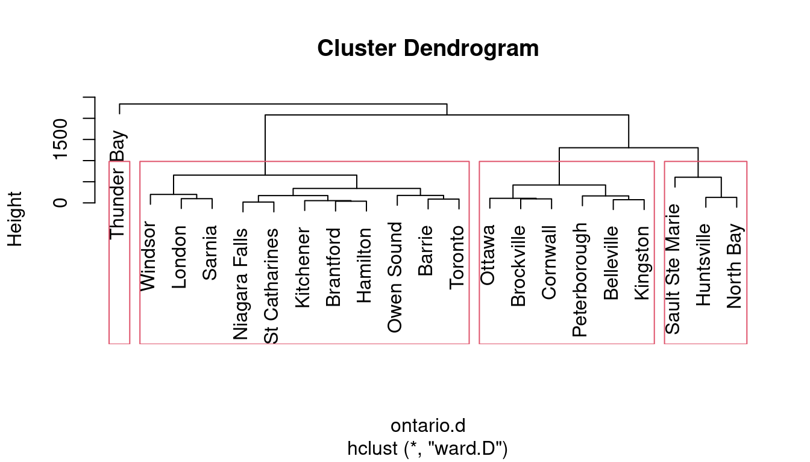

library(MASS) # for lda later
library(tidyverse)
library(spatstat) # for crossdist later
library(ggrepel)
library(conflicted)
conflict_prefer("select", "dplyr")
conflict_prefer("filter", "dplyr")Cluster analysis
Cluster Analysis
One side-effect of discriminant analysis: could draw picture of data (if 1st 2s
LDs told most of story) and see which individuals “close” to each other.Discriminant analysis requires knowledge of groups.
Without knowledge of groups, use cluster analysis: see which individuals close together, which groups suggested by data.
Idea: see how individuals group into “clusters” of nearby individuals.
Base on “dissimilarities” between individuals.
Or base on standard deviations and correlations between variables (assesses dissimilarity behind scenes).
Packages
One to ten in 11 languages
| English | Norwegian | Danish | Dutch | German | |
|---|---|---|---|---|---|
| 1 | one | en | en | een | eins |
| 2 | two | to | to | twee | zwei |
| 3 | three | tre | tre | drie | drei |
| 4 | four | fire | fire | vier | vier |
| 5 | five | fem | fem | vijf | funf |
| 6 | six | seks | seks | zes | sechs |
| 7 | seven | sju | syv | zeven | sieben |
| 8 | eight | atte | otte | acht | acht |
| 9 | nine | ni | ni | negen | neun |
| 10 | ten | ti | ti | tien | zehn |
One to ten
| French | Spanish | Italian | Polish | Hungarian | Finnish | |
|---|---|---|---|---|---|---|
| 1 | un | uno | uno | jeden | egy | yksi |
| 2 | deux | dos | due | dwa | ketto | kaksi |
| 3 | trois | tres | tre | trzy | harom | kolme |
| 4 | quatre | cuatro | quattro | cztery | negy | nelja |
| 5 | cinq | cinco | cinque | piec | ot | viisi |
| 6 | six | seis | sei | szesc | hat | kuusi |
| 7 | sept | siete | sette | siedem | het | seitseman |
| 8 | huit | ocho | otto | osiem | nyolc | kahdeksan |
| 9 | neuf | nueve | nove | dziewiec | kilenc | yhdeksan |
| 10 | dix | diez | dieci | dziesiec | tiz | kymmenen |
Dissimilarities and languages example
Can define dissimilarities how you like (whatever makes sense in application).
Sometimes defining “similarity” makes more sense; can turn this into dissimilarity by subtracting from some maximum.
Example: numbers 1–10 in various European languages. Define similarity between two languages by counting how often the same number has a name starting with the same letter (and dissimilarity by how often number has names starting with different letter).
Crude (doesn’t even look at most of the words), but see how effective.
Two kinds of cluster analysis
Looking at process of forming clusters (of similar languages): hierarchical cluster analysis (
hclust).Start with each individual in cluster by itself.
Join “closest” clusters one by one until all individuals in one cluster.
How to define closeness of two clusters? Not obvious, investigate in a moment.
Know how many clusters: which division into that many clusters is “best” for individuals? K-means clustering (
kmeans).
Two made-up clusters

How to measure distance between set of red points and set of blue ones?
Single-linkage distance
Find the red point and the blue point that are closest together:

Single-linkage distance between 2 clusters is distance between their closest points.
Complete linkage
Find the red and blue points that are farthest apart:

Complete-linkage distance is distance between farthest points.
Ward’s method
Work out mean of each cluster and join point to its mean:

Work out (i) sum of squared distances of points from means.
Ward’s method part 2
Now imagine combining the two clusters and working out overall mean. Join each point to this mean:

Calc sum of squared distances (ii) of points to combined mean.
Ward’s method part 3
Sum of squares (ii) will be bigger than (i) (points closer to own cluster mean than combined mean).
Ward’s distance is (ii) minus (i).
Think of as “cost” of combining clusters:
if clusters close together, (ii) only a little larger than (i)
if clusters far apart, (ii) a lot larger than (i) (as in example).
Hierarchical clustering revisited
Single linkage, complete linkage, Ward are ways of measuring closeness of clusters.
Use them, starting with each observation in own cluster, to repeatedly combine two closest clusters until all points in one cluster.
They will give different answers (clustering stories).
Single linkage tends to make “stringy” clusters because clusters can be very different apart from two closest points.
Complete linkage insists on whole clusters being similar.
Ward tends to form many small clusters first.
Dissimilarity data in R
Dissimilarities for language data were how many number names had different first letter:
my_url <- "http://ritsokiguess.site/datafiles/languages.txt"
(number.d <- read_table(my_url))# A tibble: 11 × 12
la en no dk nl de fr es it
<chr> <dbl> <dbl> <dbl> <dbl> <dbl> <dbl> <dbl> <dbl>
1 en 0 2 2 7 6 6 6 6
2 no 2 0 1 5 4 6 6 6
3 dk 2 1 0 6 5 6 5 5
4 nl 7 5 6 0 5 9 9 9
5 de 6 4 5 5 0 7 7 7
6 fr 6 6 6 9 7 0 2 1
7 es 6 6 5 9 7 2 0 1
8 it 6 6 5 9 7 1 1 0
9 pl 7 7 6 10 8 5 3 4
10 hu 9 8 8 8 9 10 10 10
11 fi 9 9 9 9 9 9 9 8
# ℹ 3 more variables: pl <dbl>, hu <dbl>, fi <dbl>Making a distance object
number.d %>%
select(-la) %>%
as.dist() -> d
d en no dk nl de fr es it pl hu
no 2
dk 2 1
nl 7 5 6
de 6 4 5 5
fr 6 6 6 9 7
es 6 6 5 9 7 2
it 6 6 5 9 7 1 1
pl 7 7 6 10 8 5 3 4
hu 9 8 8 8 9 10 10 10 10
fi 9 9 9 9 9 9 9 8 9 8class(d)[1] "dist"Cluster analysis and dendrogram
d.hc <- hclust(d, method = "single")
plot(d.hc)
Clustering process
d.hc$labels [1] "en" "no" "dk" "nl" "de" "fr" "es" "it" "pl" "hu" "fi"d.hc$merge [,1] [,2]
[1,] -2 -3
[2,] -6 -8
[3,] -7 2
[4,] -1 1
[5,] -9 3
[6,] -5 4
[7,] -4 6
[8,] 5 7
[9,] -10 8
[10,] -11 9Comments
Lines of
mergeshow what was combinedFirst, languages 2 and 3 (
noanddk)Then languages 6 and 8 (
frandit)Then #7 combined with cluster formed at step 2 (
esjoined tofrandit).Then
enjoined tonoanddkFinally
fijoined to all others.
Complete linkage
d.hc <- hclust(d, method = "complete")
plot(d.hc)
Ward
d.hc <- hclust(d, method = "ward.D")
plot(d.hc)
Chopping the tree
- Three clusters (from Ward) looks good:
cutree(d.hc, 3)en no dk nl de fr es it pl hu fi
1 1 1 1 1 2 2 2 2 3 3 Turning the “named vector” into a data frame
cutree(d.hc, 3) %>% enframe(name="country", value="cluster")# A tibble: 11 × 2
country cluster
<chr> <int>
1 en 1
2 no 1
3 dk 1
4 nl 1
5 de 1
6 fr 2
7 es 2
8 it 2
9 pl 2
10 hu 3
11 fi 3Drawing those clusters on the tree
plot(d.hc)
rect.hclust(d.hc, 3)
Comparing single-linkage and Ward
In Ward, Dutch and German get joined earlier (before joining to Germanic cluster).
Also Hungarian and Finnish get combined earlier.
Making those dissimilarities
Original data:
my_url <- "http://ritsokiguess.site/datafiles/one-ten.txt"
lang <- read_delim(my_url, " ")
lang# A tibble: 10 × 11
en no dk nl de fr es it pl
<chr> <chr> <chr> <chr> <chr> <chr> <chr> <chr> <chr>
1 one en en een eins un uno uno jeden
2 two to to twee zwei deux dos due dwa
3 three tre tre drie drei trois tres tre trzy
4 four fire fire vier vier quatre cuatro quatt… czte…
5 five fem fem vijf funf cinq cinco cinque piec
6 six seks seks zes sechs six seis sei szesc
7 seven sju syv zeven sieben sept siete sette sied…
8 eight atte otte acht acht huit ocho otto osiem
9 nine ni ni negen neun neuf nueve nove dzie…
10 ten ti ti tien zehn dix diez dieci dzie…
# ℹ 2 more variables: hu <chr>, fi <chr>It would be a lot easier to extract the first letter if the number names were all in one column.
Tidy, and extract first letter
lang %>% mutate(number=row_number()) %>%
pivot_longer(-number, names_to="language", values_to="name") %>%
mutate(first=str_sub(name, 1, 1)) -> lang.long
lang.long # A tibble: 110 × 4
number language name first
<int> <chr> <chr> <chr>
1 1 en one o
2 1 no en e
3 1 dk en e
4 1 nl een e
5 1 de eins e
6 1 fr un u
7 1 es uno u
8 1 it uno u
9 1 pl jeden j
10 1 hu egy e
# ℹ 100 more rowsCalculating dissimilarity
Suppose we wanted dissimilarity between English and Norwegian. It’s the number of first letters that are different.
First get the lines for English:
english <- lang.long %>% filter(language == "en")
english# A tibble: 10 × 4
number language name first
<int> <chr> <chr> <chr>
1 1 en one o
2 2 en two t
3 3 en three t
4 4 en four f
5 5 en five f
6 6 en six s
7 7 en seven s
8 8 en eight e
9 9 en nine n
10 10 en ten t And then the lines for Norwegian
norwegian <- lang.long %>% filter(language == "no")
norwegian# A tibble: 10 × 4
number language name first
<int> <chr> <chr> <chr>
1 1 no en e
2 2 no to t
3 3 no tre t
4 4 no fire f
5 5 no fem f
6 6 no seks s
7 7 no sju s
8 8 no atte a
9 9 no ni n
10 10 no ti t And now we want to put them side by side, matched by number. This is what left_join does. (A “join” is a lookup of values in one table using another.)
The join
english %>% left_join(norwegian, join_by(number))# A tibble: 10 × 7
number language.x name.x first.x language.y name.y first.y
<int> <chr> <chr> <chr> <chr> <chr> <chr>
1 1 en one o no en e
2 2 en two t no to t
3 3 en three t no tre t
4 4 en four f no fire f
5 5 en five f no fem f
6 6 en six s no seks s
7 7 en seven s no sju s
8 8 en eight e no atte a
9 9 en nine n no ni n
10 10 en ten t no ti t first.x is 1st letter of English word, first.y 1st letter of Norwegian word.
Counting the different ones
english %>% left_join(norwegian, join_by(number)) %>%
count(different=(first.x != first.y)) # A tibble: 2 × 2
different n
<lgl> <int>
1 FALSE 8
2 TRUE 2or
english %>% left_join(norwegian, join_by(number)) %>%
count(different=(first.x != first.y)) %>%
filter(different) %>% pull(n) -> ans
ans[1] 2Words for 1 and 8 start with different letter; rest are same.
A language with itself
The answer should be zero:
english %>% left_join(english, join_by(number)) %>%
count(different=(first.x != first.y)) %>%
filter(different) %>% pull(n) -> ans
ansinteger(0)- but this is “an integer vector of length zero”.
- so we have to allow for this possibility when we write a function to do it.
Function to do this for any two languages
countdiff <- function(lang.1, lang.2, d) {
d %>% filter(language == lang.1) -> lang1d
d %>% filter(language == lang.2) -> lang2d
lang1d %>%
left_join(lang2d, join_by(number)) %>%
count(different = (first.x != first.y)) %>%
filter(different) %>% pull(n) -> ans
# if ans has length zero, set answer to (integer) zero.
ifelse(length(ans)==0, 0L, ans)
}Testing
countdiff("en", "no", lang.long)[1] 2countdiff("en", "en", lang.long)[1] 0English and Norwegian have two different; English and English have none different.
Check.
For all pairs of languages?
- First need all the languages:
languages <- names(lang)
languages [1] "en" "no" "dk" "nl" "de" "fr" "es" "it" "pl"
[10] "hu" "fi"- and then all pairs of languages:
pairs <- crossing(lang = languages, lang2 = languages) The pairs
pairs# A tibble: 121 × 2
lang lang2
<chr> <chr>
1 de de
2 de dk
3 de en
4 de es
5 de fi
6 de fr
7 de hu
8 de it
9 de nl
10 de no
# ℹ 111 more rowsRun countdiff for all those language pairs
pairs %>% rowwise() %>%
mutate(diff = countdiff(lang, lang2, lang.long)) -> thediff
thediff# A tibble: 121 × 3
# Rowwise:
lang lang2 diff
<chr> <chr> <int>
1 de de 0
2 de dk 5
3 de en 6
4 de es 7
5 de fi 9
6 de fr 7
7 de hu 9
8 de it 7
9 de nl 5
10 de no 4
# ℹ 111 more rowsMake square table of these
thediff %>% pivot_wider(names_from=lang2, values_from=diff)# A tibble: 11 × 12
lang de dk en es fi fr hu it
<chr> <int> <int> <int> <int> <int> <int> <int> <int>
1 de 0 5 6 7 9 7 9 7
2 dk 5 0 2 5 9 6 8 5
3 en 6 2 0 6 9 6 9 6
4 es 7 5 6 0 9 2 10 1
5 fi 9 9 9 9 0 9 8 9
6 fr 7 6 6 2 9 0 10 1
7 hu 9 8 9 10 8 10 0 10
8 it 7 5 6 1 9 1 10 0
9 nl 5 6 7 9 9 9 8 9
10 no 4 1 2 6 9 6 8 6
11 pl 8 6 7 3 9 5 10 4
# ℹ 3 more variables: nl <int>, no <int>, pl <int>and that was where we began.
Another example
Birth, death and infant mortality rates for 97 countries (variables not dissimilarities):
24.7 5.7 30.8 Albania 12.5 11.9 14.4 Bulgaria
13.4 11.7 11.3 Czechoslovakia 12 12.4 7.6 Former_E._Germany
11.6 13.4 14.8 Hungary 14.3 10.2 16 Poland
13.6 10.7 26.9 Romania 14 9 20.2 Yugoslavia
17.7 10 23 USSR 15.2 9.5 13.1 Byelorussia_SSR
13.4 11.6 13 Ukrainian_SSR 20.7 8.4 25.7 Argentina
46.6 18 111 Bolivia 28.6 7.9 63 Brazil
23.4 5.8 17.1 Chile 27.4 6.1 40 Columbia
32.9 7.4 63 Ecuador 28.3 7.3 56 Guyana
...Want to find groups of similar countries (and how many groups, which countries in each group).
Tree would be unwieldy with 97 countries.
More automatic way of finding given number of clusters?
Reading in
url <- "http://ritsokiguess.site/datafiles/birthrate.txt"
vital <- read_table(url)
── Column specification ────────────────────────────────────
cols(
birth = col_double(),
death = col_double(),
infant = col_double(),
country = col_character()
)vital# A tibble: 97 × 4
birth death infant country
<dbl> <dbl> <dbl> <chr>
1 24.7 5.7 30.8 Albania
2 13.4 11.7 11.3 Czechoslovakia
3 11.6 13.4 14.8 Hungary
4 13.6 10.7 26.9 Romania
5 17.7 10 23 USSR
6 13.4 11.6 13 Ukrainian_SSR
7 46.6 18 111 Bolivia
8 23.4 5.8 17.1 Chile
9 32.9 7.4 63 Ecuador
10 34.8 6.6 42 Paraguay
# ℹ 87 more rowsStandardizing
Infant mortality rate numbers bigger than others, consequence of measurement scale (arbitrary).
Standardize (numerical) columns of data frame to have mean 0, SD 1, done by
scale.
vital %>%
mutate(across(where(is.numeric), \(x) scale(x))) -> vital.sThree clusters
Pretend we know 3 clusters is good. Take off the column of countries, and run kmeans on the resulting data frame, asking for 3 clusters:
vital.s %>% select(-country) %>%
kmeans(3) -> vital.km3
names(vital.km3)[1] "cluster" "centers" "totss"
[4] "withinss" "tot.withinss" "betweenss"
[7] "size" "iter" "ifault" A lot of output, so look at these individually.
What’s in the output?
- Cluster sizes:
vital.km3$size[1] 40 25 32- Cluster centres:
vital.km3$centers birth death infant
1 -1.0376994 -0.3289046 -0.90669032
2 1.1780071 1.3323130 1.32732200
3 0.3768062 -0.6297388 0.09639258- Cluster 2 has lower than average rates on everything; cluster 3 has much higher than average.
Cluster sums of squares and membership
vital.km3$withinss[1] 17.21617 28.32560 21.53020Cluster 1 compact relative to others (countries in cluster 1 more similar).
vital.km3$cluster [1] 3 1 1 1 1 1 2 1 3 3 1 2 1 1 1 1 1 1 1 1 1 2 2 1 3 3 3 2
[29] 1 3 1 3 3 1 1 3 3 3 2 2 3 3 2 2 3 2 2 2 3 1 1 1 1 1 1 3
[57] 3 3 3 3 1 1 1 1 1 1 1 1 1 1 3 3 3 3 3 1 2 1 3 3 2 3 1 3
[85] 2 2 2 2 3 2 2 2 2 2 3 2 2The cluster membership for each of the 97 countries.
Store countries and clusters to which they belong
vital.3 <- tibble(
country = vital.s$country,
cluster = vital.km3$cluster
)Next, which countries in which cluster?
Write function to extract them:
get_countries <- function(i, d) {
d %>% filter(cluster == i) %>% pull(country)
}Cluster membership: cluster 2
get_countries(2, vital.3) [1] "Bolivia" "Mexico" "Afghanistan"
[4] "Iran" "Bangladesh" "Gabon"
[7] "Ghana" "Namibia" "Sierra_Leone"
[10] "Swaziland" "Uganda" "Zaire"
[13] "Cambodia" "Nepal" "Angola"
[16] "Congo" "Ethiopia" "Gambia"
[19] "Malawi" "Mozambique" "Nigeria"
[22] "Somalia" "Sudan" "Tanzania"
[25] "Zambia" Cluster 3
get_countries(3, vital.3) [1] "Albania" "Ecuador" "Paraguay"
[4] "Kuwait" "Oman" "Turkey"
[7] "India" "Mongolia" "Pakistan"
[10] "Algeria" "Botswana" "Egypt"
[13] "Libya" "Morocco" "South_Africa"
[16] "Zimbabwe" "Brazil" "Columbia"
[19] "Guyana" "Peru" "Venezuela"
[22] "Bahrain" "Iraq" "Jordan"
[25] "Lebanon" "Saudi_Arabia" "Indonesia"
[28] "Malaysia" "Philippines" "Vietnam"
[31] "Kenya" "Tunisia" Cluster 1
get_countries(1, vital.3) [1] "Czechoslovakia" "Hungary"
[3] "Romania" "USSR"
[5] "Ukrainian_SSR" "Chile"
[7] "Uruguay" "Finland"
[9] "France" "Greece"
[11] "Italy" "Norway"
[13] "Spain" "Switzerland"
[15] "Austria" "Canada"
[17] "Israel" "China"
[19] "Korea" "Singapore"
[21] "Thailand" "Bulgaria"
[23] "Former_E._Germany" "Poland"
[25] "Yugoslavia" "Byelorussia_SSR"
[27] "Argentina" "Belgium"
[29] "Denmark" "Germany"
[31] "Ireland" "Netherlands"
[33] "Portugal" "Sweden"
[35] "U.K." "Japan"
[37] "U.S.A." "United_Arab_Emirates"
[39] "Hong_Kong" "Sri_Lanka" Problem!
kmeansuses randomization. So result of one run might be different from another run.Example: just run again on 3 clusters,
tableof results:
vital.s %>%
select(-country) %>% kmeans(3) -> vital.km3a
table(
first = vital.km3$cluster,
second = vital.km3a$cluster
) second
first 1 2 3
1 40 0 0
2 0 24 1
3 4 0 28- Clusters are similar but not same.
Solution to this
nstartoption onkmeansruns that many times, takes best. Should be same every time:
vital.s %>%
select(-country) %>%
kmeans(3, nstart = 20) -> vital.km3bHow many clusters?
Three was just a guess.
Idea: try a whole bunch of #clusters (say 2–20), obtain measure of goodness of fit for each, make plot.
Appropriate measure is
tot.withinss.Run
kmeansfor each #clusters, gettot.withinsseach time.
Function to get tot.withinss
for an input number of clusters, taking only numeric columns of input data frame:
ss <- function(i, d) {
d %>%
select(where(is.numeric)) %>%
kmeans(i, nstart = 20) -> km
km$tot.withinss
}Note: writing function to be as general as possible, so that we can re-use it later.
Constructing within-cluster SS
Make a data frame with desired numbers of clusters, and fill it with the total within-group sums of squares. ss expects a single number of clusters, not a vector of several, so run rowwise:
tibble(clusters = 2:20) %>%
rowwise() %>%
mutate(wss = ss(clusters, vital.s)) -> ssd
ssd# A tibble: 19 × 2
# Rowwise:
clusters wss
<int> <dbl>
1 2 117.
2 3 66.9
3 4 51.4
4 5 37.5
5 6 28.7
6 7 24.7
7 8 22.2
8 9 19.8
9 10 17.5
10 11 16.1
11 12 14.7
12 13 13.3
13 14 12.1
14 15 11.2
15 16 10.5
16 17 9.71
17 18 8.98
18 19 8.44
19 20 7.97Scree plot
ggplot(ssd, aes(x = clusters, y = wss)) + geom_point() +
geom_line()
Interpreting scree plot
Lower
wssbetter.But lower for larger #clusters, harder to explain.
Compromise: low-ish
wssand low-ish #clusters.Look for “elbow” in plot.
Idea: this is where
wssdecreases fast then slow.On our plot, small elbow at 6 clusters. Try this many clusters.
Six clusters, using nstart
set.seed(457299)vital.s %>%
select(-country) %>%
kmeans(6, nstart = 20) -> vital.km6
vital.km6$size[1] 24 18 15 2 8 30vital.km6$centers birth death infant
1 0.4160993 -0.5169988 0.2648754
2 1.2092406 0.7441347 1.0278003
3 -0.4357690 -1.1438599 -0.7281108
4 -0.2199722 2.1116577 -0.4544435
5 1.3043848 2.1896567 1.9470306
6 -1.1737104 -0.1856375 -0.9534370Make a data frame of countries and clusters
vital.6 <- tibble(
country = vital.s$country,
cluster = vital.km6$cluster
)
vital.6 %>% sample_n(10)# A tibble: 10 × 2
country cluster
<chr> <int>
1 Ghana 2
2 Ukrainian_SSR 6
3 Ethiopia 5
4 Somalia 5
5 Oman 1
6 Botswana 2
7 Paraguay 1
8 Czechoslovakia 6
9 Peru 1
10 Afghanistan 5Cluster 1
Below-average death rate, though other rates a little higher than average:
get_countries(1, vital.6) [1] "Ecuador" "Paraguay" "Oman"
[4] "Turkey" "India" "Mongolia"
[7] "Pakistan" "Algeria" "Egypt"
[10] "Libya" "Morocco" "South_Africa"
[13] "Zimbabwe" "Brazil" "Guyana"
[16] "Peru" "Iraq" "Jordan"
[19] "Lebanon" "Saudi_Arabia" "Indonesia"
[22] "Philippines" "Vietnam" "Tunisia" Cluster 2
High on everything:
get_countries(2, vital.6) [1] "Bolivia" "Iran" "Bangladesh" "Botswana"
[5] "Gabon" "Ghana" "Namibia" "Swaziland"
[9] "Uganda" "Zaire" "Cambodia" "Nepal"
[13] "Congo" "Kenya" "Nigeria" "Sudan"
[17] "Tanzania" "Zambia" Cluster 3
Low on everything:
get_countries(3, vital.6) [1] "Albania" "Chile"
[3] "Israel" "Kuwait"
[5] "China" "Singapore"
[7] "Thailand" "Argentina"
[9] "Columbia" "Venezuela"
[11] "Bahrain" "United_Arab_Emirates"
[13] "Hong_Kong" "Malaysia"
[15] "Sri_Lanka" Cluster 4
Very high death rate, just below average on all else:
get_countries(4, vital.6)[1] "Mexico" "Korea" Cluster 5
Very high on everything:
get_countries(5, vital.6)[1] "Afghanistan" "Sierra_Leone" "Angola"
[4] "Ethiopia" "Gambia" "Malawi"
[7] "Mozambique" "Somalia" Cluster 6
A bit below average on everything:
get_countries(6, vital.6) [1] "Czechoslovakia" "Hungary"
[3] "Romania" "USSR"
[5] "Ukrainian_SSR" "Uruguay"
[7] "Finland" "France"
[9] "Greece" "Italy"
[11] "Norway" "Spain"
[13] "Switzerland" "Austria"
[15] "Canada" "Bulgaria"
[17] "Former_E._Germany" "Poland"
[19] "Yugoslavia" "Byelorussia_SSR"
[21] "Belgium" "Denmark"
[23] "Germany" "Ireland"
[25] "Netherlands" "Portugal"
[27] "Sweden" "U.K."
[29] "Japan" "U.S.A." Comparing our 3 and 6-cluster solutions
table(three = vital.km3$cluster, six = vital.km6$cluster) six
three 1 2 3 4 5 6
1 0 0 9 1 0 30
2 0 16 0 1 8 0
3 24 2 6 0 0 0Compared to 3-cluster solution:
most of (old) cluster 1 gone to (new) cluster 6
cluster 2 split into clusters 2 and 5 (two types of “poor” countries)
cluster 3 split into clusters 1 and 3 (two types of “intermediate” countries, divided by death rate).
Getting a picture from kmeans
- Use discriminant analysis on clusters found, treating them as “known” groups.
Discriminant analysis
So what makes the groups different?
Uses package
MASS(loaded):
vital.lda <- lda(vital.km6$cluster ~ birth + death + infant,
data = vital.s)
vital.lda$svd[1] 21.687195 8.851811 1.773006vital.lda$scaling LD1 LD2 LD3
birth 2.6879695 1.1224202 -1.9483853
death 0.6652712 -2.7213044 -0.6049358
infant 2.1111801 0.7650912 2.3542296LD1 is some of everything (high=poor, low=rich).
LD2 mainly death rate, high or low.
A data frame to make plot from
- Get predictions first:
vital.pred <- predict(vital.lda)
d <- data.frame(
country = vital.s$country,
cluster = vital.km6$cluster,
vital.pred$x
)
d country cluster LD1
1 Albania 3 -2.74034473
2 Czechoslovakia 6 -5.01874312
3 Hungary 6 -4.97189595
4 Romania 6 -4.40612396
5 USSR 6 -3.87181416
6 Ukrainian_SSR 6 -4.95502329
7 Bolivia 2 7.04719692
8 Chile 3 -3.61284528
9 Ecuador 1 0.60813286
10 Paraguay 1 -0.09333631
11 Uruguay 6 -3.92003877
12 Mexico 4 1.17794263
13 Finland 6 -5.53992595
14 France 6 -5.48731510
15 Greece 6 -6.04517374
16 Italy 6 -6.23984314
17 Norway 6 -5.14396822
18 Spain 6 -6.20238403
19 Switzerland 6 -5.70503604
20 Austria 6 -5.48811665
21 Canada 6 -5.61852237
22 Afghanistan 5 9.15790453
23 Iran 2 5.17009665
24 Israel 3 -4.09921633
25 Kuwait 3 -3.52238895
26 Oman 1 2.12959716
27 Turkey 1 0.61384977
28 Bangladesh 2 6.18349326
29 China 3 -3.23659422
30 India 1 1.81800150
31 Korea 4 -1.46967404
32 Mongolia 1 1.67300272
33 Pakistan 1 2.24428372
34 Singapore 3 -5.25056428
35 Thailand 3 -3.05879372
36 Algeria 1 1.75779182
37 Botswana 2 4.48834877
38 Egypt 1 1.45515716
39 Gabon 2 5.07955834
40 Ghana 2 4.94529597
41 Libya 1 3.96906505
42 Morocco 1 2.33973207
43 Namibia 2 6.78839862
44 Sierra_Leone 5 10.11147508
45 South_Africa 1 1.22038392
46 Swaziland 2 6.62089564
47 Uganda 2 7.44759122
48 Zaire 2 5.01954548
49 Zimbabwe 1 2.90708292
50 Bulgaria 6 -5.02639603
51 Former_E._Germany 6 -5.36617200
52 Poland 6 -4.83913984
53 Yugoslavia 6 -4.87765104
54 Byelorussia_SSR 6 -4.89387951
55 Argentina 3 -3.38164344
56 Brazil 1 -0.17351090
57 Columbia 3 -1.72504134
58 Guyana 1 -0.64024371
59 Peru 1 2.88979728
60 Venezuela 3 -2.71512137
61 Belgium 6 -5.61006438
62 Denmark 6 -5.36296636
63 Germany 6 -5.66618148
64 Ireland 6 -5.22803491
65 Netherlands 6 -5.69497185
66 Portugal 6 -5.54867384
67 Sweden 6 -5.14801099
68 U.K. 6 -5.14080545
69 Japan 6 -6.74109078
70 U.S.A. 6 -4.98026088
71 Bahrain 3 -2.95751794
72 Iraq 1 2.86550554
73 Jordan 1 0.78337204
74 Lebanon 1 -0.13242340
75 Saudi_Arabia 1 2.82947028
76 United_Arab_Emirates 3 -3.60965788
77 Cambodia 2 6.68714487
78 Hong_Kong 3 -6.56814921
79 Indonesia 1 0.59203984
80 Malaysia 3 -1.69768174
81 Nepal 2 5.98051592
82 Philippines 1 -0.11564367
83 Sri_Lanka 3 -3.86669807
84 Vietnam 1 0.73637772
85 Angola 5 8.67464018
86 Congo 2 4.71698904
87 Ethiopia 5 9.02400482
88 Gambia 5 9.16151584
89 Kenya 2 4.37728422
90 Malawi 5 9.25868839
91 Mozambique 5 8.17837256
92 Nigeria 2 6.80523311
93 Somalia 5 9.02055241
94 Sudan 2 6.19772237
95 Tunisia 1 -0.26827112
96 Tanzania 2 7.01894686
97 Zambia 2 5.90158841
LD2 LD3
1 2.23114272 0.086392118
2 -2.54276395 -0.067491502
3 -3.62910309 0.149274227
4 -1.68114304 0.832426535
5 -0.99643221 0.134219177
6 -2.45593006 0.032543051
7 -1.82235340 -0.559232315
8 1.83697531 -0.440912763
9 2.45078735 0.333955737
10 2.72730980 -0.910115449
11 -0.75565723 0.086830641
12 -7.45661911 -2.185449656
13 -1.71396053 -0.111993227
14 -1.24432254 0.003489983
15 -1.35732249 0.717192252
16 -1.36850774 0.675127833
17 -1.94087447 -0.245927314
18 -0.77030865 0.612616941
19 -1.39900851 0.133327537
20 0.04445534 0.107554431
21 0.05655923 0.137152032
22 -1.57150002 3.855195867
23 1.59572127 0.728082136
24 1.32996325 -0.726569567
25 4.20168393 -0.538116615
26 2.88622987 -2.722021794
27 1.77493550 1.401386127
28 -0.58998184 0.808514931
29 1.37556784 0.521048584
30 1.07819827 1.747922987
31 -5.22549147 -1.651932383
32 1.97934176 -0.052585403
33 2.56907200 2.904858080
34 1.56461210 -0.048777986
35 0.81462641 0.027926012
36 2.32221009 0.405915880
37 1.35059836 -2.251690523
38 1.48375960 -1.484115076
39 -1.84934413 0.223023990
40 0.51518412 -0.679939548
41 2.51546738 -0.550299598
42 1.57697751 0.620167354
43 1.81616353 1.811177322
44 -4.13640327 0.708806858
45 1.07036311 0.584292394
46 1.53114576 0.486213522
47 -0.08614119 -1.461769491
48 -0.14593127 -1.354022712
49 1.53174980 -1.155638673
50 -2.68287368 0.194600531
51 -3.13019129 -0.146640390
52 -1.51169554 0.238889303
53 -0.76403413 0.653220196
54 -1.07548768 0.052116630
55 0.23391708 0.049204615
56 1.80173696 0.887331423
57 2.37367896 0.116914571
58 2.01175992 0.650267842
59 2.70398544 2.617485939
60 3.09958020 -0.531015134
61 -2.07122472 0.103010698
62 -2.80594142 -0.144208119
63 -2.48058100 0.085615217
64 -0.94271289 -0.168083173
65 -0.81402153 0.149795861
66 -1.34891130 0.526746892
67 -2.19511746 -0.439370072
68 -2.45732616 -0.218666957
69 -0.01816615 0.738650841
70 -0.19798546 -0.186143629
71 3.40403941 -0.956027685
72 3.12008079 -0.806112179
73 3.21739659 -1.371400507
74 1.34062918 -0.430471811
75 3.22903162 -0.605791417
76 3.10639879 0.361277059
77 -1.11737674 1.343455301
78 1.21156621 0.795955999
79 1.12304477 1.306331526
80 2.74828222 -1.241072895
81 -0.24581105 1.734265161
82 2.00054960 -0.669610455
83 1.46702228 -0.073210404
84 1.14664253 0.270008884
85 -2.62832040 0.398976877
86 -0.50507133 -1.989873503
87 -2.80509362 0.132536656
88 -3.21458937 0.521137723
89 1.48515306 -1.740964552
90 -5.46422766 -0.742329819
91 -1.74864060 1.141424236
92 -0.35943688 -0.827233974
93 -2.47121452 -0.274058230
94 -0.74977705 -0.138778600
95 2.17721533 0.042802627
96 0.75977710 -0.855439352
97 0.55264060 -2.233552693What’s in there; making a plot
dcontains country names, cluster memberships and discriminant scores.- Plot
LD1againstLD2, colouring points by cluster and labelling by country:
g <- ggplot(d, aes(
x = LD1, y = LD2, colour = factor(cluster),
label = country
)) + geom_point() +
geom_text_repel(size = 2, max.overlaps = Inf) + guides(colour = "none")The plot
g
It would be better to zoom in on parts of this plot.
Final example: a hockey league
An Ontario hockey league has teams in 21 cities. How can we arrange those teams into 4 geographical divisions?
Distance data in spreadsheet.
Take out spaces in team names.
Save as “text/csv”.
Distances, so back to
hclust.
A map

Attempt 1
my_url <-
"http://ritsokiguess.site/datafiles/ontario-road-distances.csv"
ontario <- read_csv(my_url)
ontario.d <- ontario %>% select(-1) %>% as.dist()
ontario.hc <- hclust(ontario.d, method = "ward.D")Plot, with 4 clusters
plot(ontario.hc)
rect.hclust(ontario.hc, 4)
Comments
Can’t have divisions of 1 team!
“Southern” divisions way too big!
Try splitting into more. I found 7 to be good:
Seven clusters
plot(ontario.hc)
rect.hclust(ontario.hc, 7)
Divisions now
I want to put Huntsville and North Bay together with northern teams.
I’ll put the Eastern teams together. Gives:
North: Sault Ste Marie, Sudbury, Huntsville, North Bay
East: Brockville, Cornwall, Ottawa, Peterborough, Belleville, Kingston
West: Windsor, London, Sarnia
Central: Owen Sound, Barrie, Toronto, Niagara Falls, St Catharines, Brantford, Hamilton, Kitchener
Getting them same size beyond us!
Another map

Comments
Tree shows how languages combined into clusters.
First (bottom), Spanish, French, Italian joined into one cluster, Norwegian and Danish into another.
Later, English joined to Norse languages, Polish to Romance group.
Then German, Dutch make a Germanic group.
Finally, Hungarian and Finnish joined to each other and everything else.